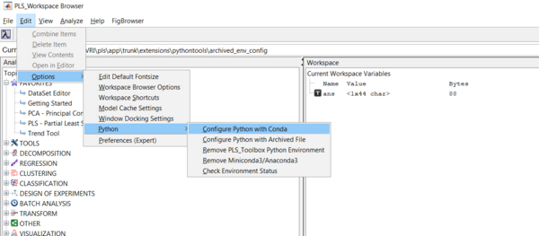
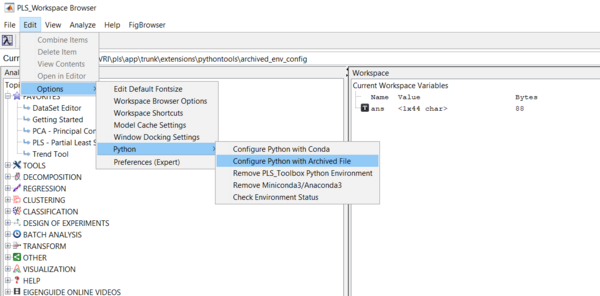

Python configuration
Purpose
Creates a Python virtual environment for PLS_Toolbox, giving access to evrimodel objects that use Python. Applicable for PLS_Toolbox/Solo 9.0 and newer. The correct version of Python, and its necessary packages, will be installed or built for you.
Synopsis
- result = config_pyenv(options);
Options
options = a structure array with the following fields:
- source: [ {'conda'} | 'archived' ], The source of which Python is built and configured for PLS_Toolbox/Solo. When source='conda', a virtual environment is built using Miniconda/Anaconda. If source='archived', then the Python comes from an archived file. This file is available upon request to our helpdesk starting in 9.1.
- silent: [ {'no'} | 'yes' ], Governs the level of user-input needed. A dialog box is created asking the user if they would like to continue with the configuration when silent='no'. No dialog box is created when silent='yes'.
Methods Required for Configuration
Below shows a table of the PLS_Toolbox methods that use Python. The table also shows the corresponding Python package used to run each method. Without the proper configuration, access is denied to all of these methods.
| PLS_Toolbox Method | Python Package |
|---|---|
| TSNE | Scikit-Learn |
| UMAP | Umap-Learn |
| ANNDL | Scikit-Learn & Tensorflow |
| ANNDLDA | Scikit-Learn & Tensorflow |
Important Note: Python in PLS_Toolbox/Solo for Apple Silicon devices is not fully supported yet.
Conda Solution
Used when options.source='conda'. This is the default method when running config_pyenv. Follow the steps below to create your virtual environment via Miniconda/Anaconda.
What's needed
- Either one of Miniconda3 or Anaconda3 (The ability to use Anaconda with PLS_Toolbox is for versions 9.1 and newer)
- Both of these are Python virtual environment management softwares. The management software is what's used to help build and maintain the PLS_Toolbox virtual environment. Instructions to download and install are located below. Miniconda3 is an abbreviated version of Anaconda3 that takes less space but does not have a user interface. Anaconda3 contains more packages and includes a nice interface for interaction, but takes much more space. We recommend Miniconda3 if you are new to either of these softwares. See this link to decide which is best for you: https://docs.conda.io/projects/conda/en/latest/user-guide/install/download.html#anaconda-or-miniconda. If you already have either of these, ensure that it has been added to the System Path for the configuration in MATLAB/Solo to work correctly.
- MATLAB R2020b or newer/ Solo 9.0 or newer
- This requirement allows the use of recent versions of Python and its packages.
- Internet connection for Miniconda3/Anaconda3 download and Python configuration
Note: The configuration can take a couple of minutes to complete. The PLS_Toolbox virtual environment can take between 1-2 GB of space.
A Python virtual environment is a setup denoting the version of Python being used as well as the packages and their versions. Virtual environments are created to organize these setups, and usually are created on a project-to-project basis. This PLS_Toolbox virtual environment is tailored for the user to use the Python methods in the toolbox. It is advised to not modify, add, or delete packages from this environment. We cannot guarantee that the software will work after modifications.
How to configure
Configuration requires that Miniconda3/Anaconda3 be properly downloaded and installed following these instructions. Deviation from these instructions can lead to issues when running the configuration or running the Python methods.
Python configuration video
Download Miniconda3/Anaconda3
- If using Miniconda3
- Open a browser and navigate to Miniconda's site: https://docs.conda.io/en/latest/miniconda.html
- Pick a link pertaining to your machine that explicitly states Miniconda3 in the hyperlink. The particular version associated with each of the installers is not important, any of these should work fine. If running macOS, select the .pkg installer.
- Run the installer, place software you know you have sufficient access to when it prompts you where you would like for it to be located on your machine.
- If asked to add to the System Path, do so. Ignore the message saying that doing this is not recommended.
- If using Anaconda3
- Open a browser and navigate to Anaconda's download site: https://www.anaconda.com/products/distribution
- Click Download
- Run the installer, place software you know you have sufficient access to when it prompts you where you would like for it to be located on your machine.
- If asked to add to the System Path, do so. Ignore the message saying that doing this is not recommended.
- 5. Finish installation.
Configuration step in MATLAB
Once PLS_Toolbox has been installed in MATLAB, launch MATLAB and execute config_pyenv in the Command Window.
Successful configuration results in the message Your pyenv was configured successfully! on the command line, and subsequent execution of pyenv on the MATLAB command line produces output which should closely resemble what is displayed below

Configuration step in Solo
Open Solo and configure Python by going to Edit>Options>Python>Configure Python with Conda, like in the screenshot below. 
Once completed, there will be a window that prompts a successful configuration if no issues arise:
Archived Solution
Used when options.source='archived'. Follow the steps below to create your virtual environment via an archived file provided by our helpdesk.
What's needed
An archived file with the compressed Python environment. This is only available upon request to our helpdesk at helpdesk@eigenvector.com.
Note: The configuration can take a couple of minutes to complete. The PLS_Toolbox virtual environment can take between 1-2 GB of space.
A Python virtual environment is a setup denoting the version of Python being used as well as the packages and their versions. Virtual environments are created to organize these setups, and usually are created on a project-to-project basis. This PLS_Toolbox virtual environment is tailored for the user to use the Python methods in the toolbox. It is advised to not modify, add, or delete packages from this environment. We cannot guarantee that the software will work after modifications.
How to configure
No additional software is needed unlike the Conda solution. Just get the archived file from the helpdesk. Once downloaded on your machine, you will have to place it in directory of your choosing. Please choose a directory where you know you have sufficient rights. You will be prompted where this folder is located when running config_pyenv. You will start the configuration by choosing the archive file, which may look similar to what's below (no need to unzip or extract the archived file):
then click Open.
Configuration step in MATLAB
Once PLS_Toolbox has been installed in MATLAB, launch MATLAB and execute the following in the Command Window:
options = config_pyenv('options');
options.source = 'archived';
result = config_pyenv(options);
Successful configuration results in the message Your pyenv was configured successfully! on the command line, and subsequent execution of pyenv on the MATLAB command line produces output which should closely resemble what is displayed below (archived file was downloaded to folder called archive_env_config.
Configuration step in Solo
Open Solo and configure Python by going to Edit>Options>Python>Configure Python with Archived File, like in the screenshot below. 
Once completed, there will be a window that prompts a successful configuration if no issues arise:
Testing configuration
It's important to see that the configuration worked and that there is no unexpected behavior from Python. Follow the testing protocols below.
Test in MATLAB
To make sure that PLS_Toolbox and Python are working correctly, run one of the demo scripts that uses Python:
- tsnedemo
- umapdemo
- anndldemo (change line 35 to
options.algorithm = 'tensorflow'to use Tensorflow) - anndldademo (change line 70 to
options.algorithm = 'tensorflow'to use Tensorflow)
If there are issues doing this, see the Troubleshooting section.
Test in Solo
Open one the Analysis Windows that uses Python and build a model to make sure that Solo and Python are working correctly.
If there are issues doing this, see the Troubleshooting section.
Undo configuration
If there comes a time that a user wants to undo this configuration, the user has two options: delete the PLS_Toolbox virtual environment or delete Miniconda3. See below how to do either of these options. Note: Deleting Miniconda3 will remove the PLS_Toolbox virtual environment, as well as any other virtual environments you may have created. Please use with caution.
Undo in MATLAB
- If the user would like to remove just the PLS_Toolbox virtual environment, run the following in the Command Window in MATLAB:
undo_config_pyenv. - If the user would like to remove Miniconda3/Anaconda3 (as well as the PLS_Toolbox virtual environment), run the following in the Command Window in MATLAB:
options = undo_config_pyenv('options');
options.remove_all = 'yes';
result = undo_config_pyenv(options);
Undo in Solo
- If the user would like to remove just the PLS_Toolbox virtual environment (and keep Miniconda3)
- Open Solo and go to Edit>Options>Python>Remove PLS_Toolbox Python Environment.
- If the user would like to remove Miniconda3 (as well as the PLS_Toolbox virtual environment)
- Open Solo and go to Edit>Options>Python>Remove Miniconda3/Anaconda3.
Troubleshooting
- If MATLAB/Solo crashes when trying to run one of these methods:
- From MATLAB
- If the PLS_Toolbox virtual environment is in fact being used, then from MATLAB run
check_pyenv. If there are warnings, rerunconfig_pyenv
- If the PLS_Toolbox virtual environment is in fact being used, then from MATLAB run
- From Solo
- Click Edit>Options>Python>Check Environment Status. If there are warnings, click Configure Python.
- From MATLAB
- If there is an error along the lines of
Unable to resolve py.anything_can_be_here- From MATLAB
- Type
pyenvin the Command Window and ensure the PLS_Toolbox is being used. - If running macOS or Linux, start up a new session of MATLAB and type
py.sys.setdlopenflags(py.int(10));in the Command Window, then rerun the method that caused the crash. If the crashing persists, contact our helpdesk at helpdesk@eigenvector.com. - If the PLS_Toolbox virtual environment is in fact being used, then from MATLAB run
check_pyenv. If there are warnings, rerunconfig_pyenv
- Type
- From Solo
- Click Edit>Options>Python>Check Environment Status. If there are warnings, click Configure Python.
- From MATLAB